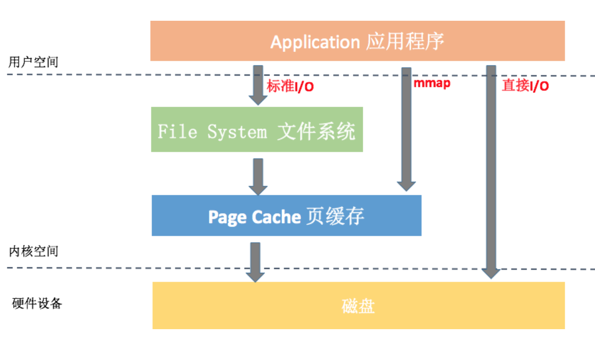
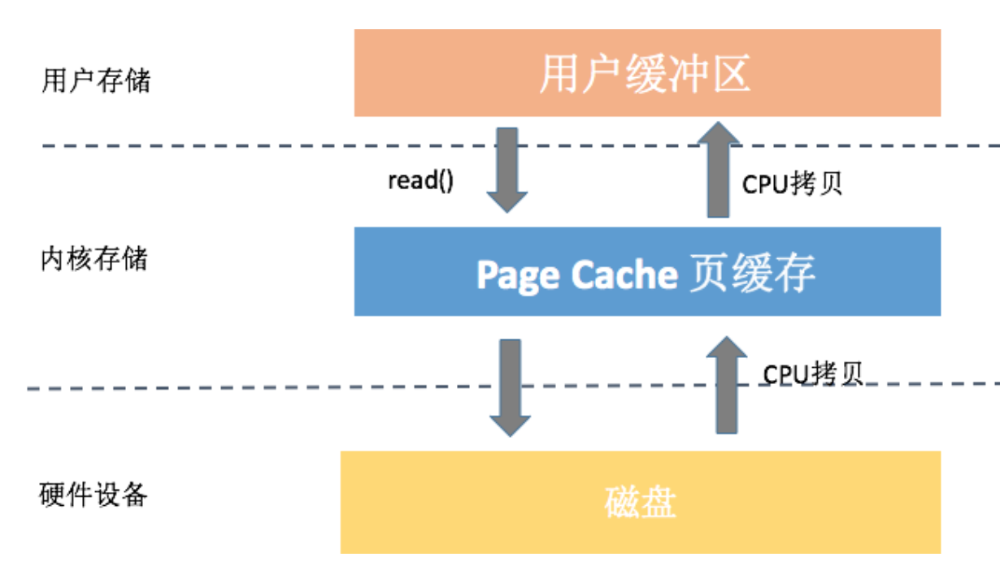
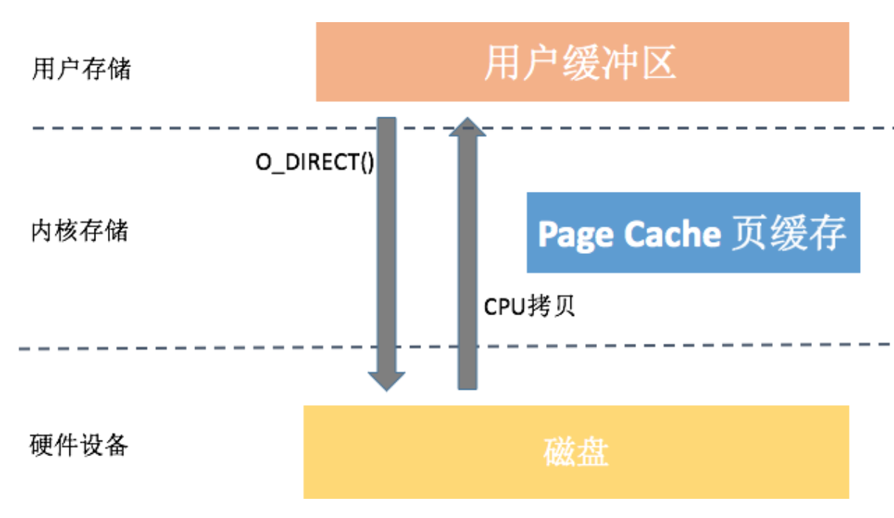
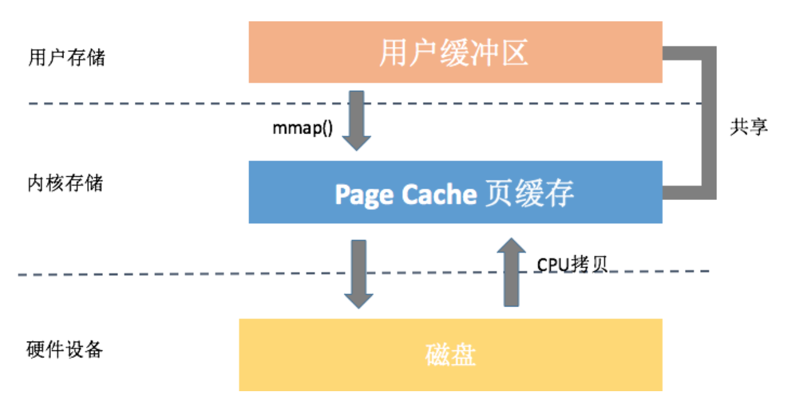
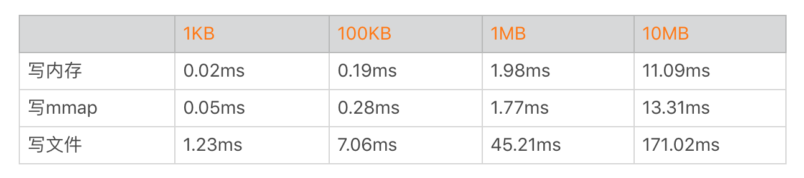
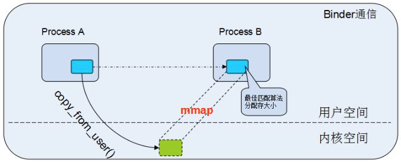
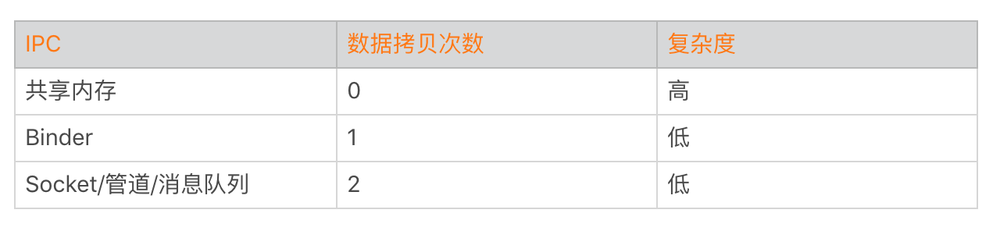
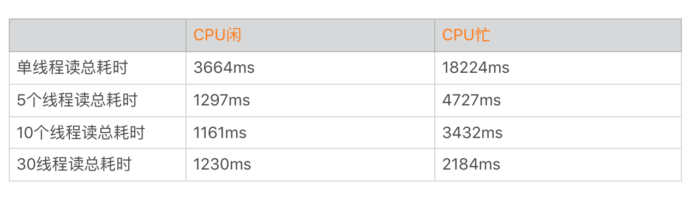
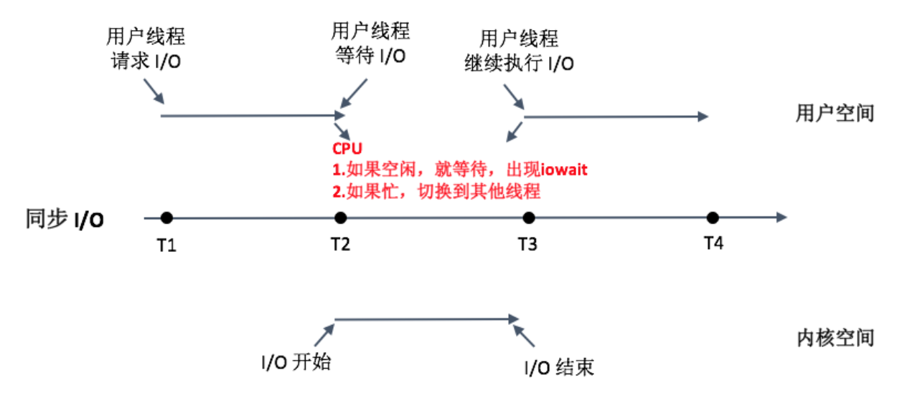
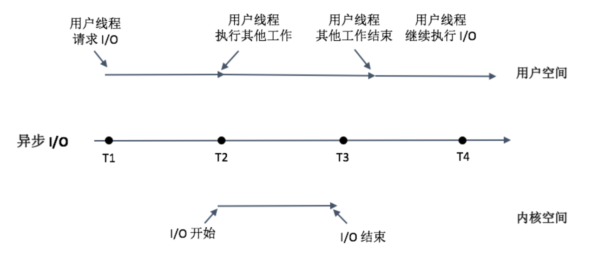

今天是 2019 年的第一天，在开始今天的学习前，先要祝你新年快乐、工作顺利。
I/O 是一个非常大的话题，很难一次性将每个细节都讲清楚。对于服务器开发者来说，可以根据需要选择合适的文件系统和磁盘类型，也可以根据需要调整内核参数。但对于移动开发者来说，我们看起来好像做不了什么 I/O 方面的优化？
事实上并不是这样的，启动优化中“数据重排”就是一个例子。如果我们非常清楚文件系统和磁盘的工作机制，就能少走一些弯路，减少应用程序 I/O 引发的问题。
在上一期中，我不止一次的提到 Page Cache 机制，它很大程度上提升了磁盘 I/O 的性能，但是也有可能导致写入数据的丢失。那究竟有哪些 I/O 方式可以选择，又应该如何应用在我们的实际工作中呢？今天我们一起来看看不同 I/O 方式的使用场景。
I/O 的三种方式
请你先在脑海里回想一下上一期提到的 Linux 通用 I/O 架构模型，里面会包括应用程序、文件系统、Page Cache 和磁盘几个部分。细心的同学可能还会发现，在图中的最左侧跟右上方还有 Direct I/O 和 mmap 的这两种 I/O 方式。
那张图似乎有那么一点复杂，下面我为你重新画了一张简图。从图中可以看到标准 I/O、mmap、直接 I/O 这三种 I/O 方式在流程上的差异，接下来我详细讲一下不同 I/O 方式的关键点以及在实际应用中需要注意的地方。

1. 标准 I/O
我们应用程序平时用到 read/write 操作都属于标准 I/O，也就是缓存 I/O（Buffered I/O）。它的关键特性有：
-
对于读操作来说，当应用程序读取某块数据的时候，如果这块数据已经存放在页缓存中，那么这块数据就可以立即返回给应用程序，而不需要经过实际的物理读盘操作。
-
对于写操作来说，应用程序也会将数据先写到页缓存中去，数据是否被立即写到磁盘上去取决于应用程序所采用写操作的机制。默认系统采用的是延迟写机制，应用程序只需要将数据写到页缓存中去就可以了，完全不需要等数据全部被写回到磁盘，系统会负责定期地将放在页缓存中的数据刷到磁盘上。
从中可以看出来，缓存 I/O 可以很大程度减少真正读写磁盘的次数，从而提升性能。但是上一期我说过延迟写机制可能会导致数据丢失，那系统究竟会在什么时机真正把页缓存的数据写入磁盘呢？
Page Cache 中被修改的内存称为“脏页”，内核通过 flush 线程定期将数据写入磁盘。具体写入的条件我们可以通过 /proc/sys/vm 文件或者 sysctl -a | grep vm 命令得到。
// flush 每隔 5 秒执行一次vm.dirty_writeback_centisecs = 500 // 内存中驻留 30 秒以上的脏数据将由 flush 在下一次执行时写入磁盘vm.dirty_expire_centisecs = 3000 // 指示若脏页占总物理内存 10％以上，则触发 flush 把脏数据写回磁盘vm.dirty_background_ratio = 10// 系统所能拥有的最大脏页缓存的总大小vm.dirty_ratio = 20在实际应用中，如果某些数据我们觉得非常重要，是完全不允许有丢失风险的，这个时候我们应该采用同步写机制。在应用程序中使用 sync、fsync、msync 等系统调用时，内核都会立刻将相应的数据写回到磁盘。

上图中我以 read() 操作为例，它会导致数据先从磁盘拷贝到 Page Cache 中，然后再从 Page Cache 拷贝到应用程序的用户空间，这样就会多一次内存拷贝。系统这样设计主要是因为内存相对磁盘是高速设备，即使多拷贝 100 次，内存也比真正读一次硬盘要快。
2. 直接 I/O
很多数据库自己已经做了数据和索引的缓存管理，对页缓存的依赖反而没那么强烈。它们希望可以绕开页缓存机制，这样可以减少一次数据拷贝，这些数据也不会污染页缓存。

从图中你可以看到，直接 I/O 访问文件方式减少了一次数据拷贝和一些系统调用的耗时，很大程度降低了 CPU 的使用率以及内存的占用。
不过，直接 I/O 有时候也会对性能产生负面影响。
-
对于读操作来说，读数据操作会造成磁盘的同步读，导致进程需要较长的时间才能执行完。
-
对于写操作来说，使用直接 I/O 也需要同步执行，也会导致应用程序等待。
Android 并没有提供 Java 的 DirectByteBuffer，直接 I/O 需要在 open() 文件的时候需要指定 O_DIRECT 参数，更多的资料可以参考《Linux 中直接 I/O 机制的介绍》。在使用直接 I/O 之前，一定要对应用程序有一个很清醒的认识，只有在确定缓冲 I/O 的开销非常巨大的情况以后，才可以考虑使用直接 I/O。
3. mmap
Android 系统启动加载 Dex 的时候，不会把整个文件一次性读到内存中，而是采用 mmap 的方式。微信的高性能日志 xlog也是使用 mmap 来保证性能和可靠性。
mmap 究竟是何方神圣，它是不是真的可以做到不丢失数据、性能还非常好？其实，它是通过把文件映射到进程的地址空间，而网上很多文章都说 mmap 完全绕开了页缓存机制，其实这并不正确。我们最终映射的物理内存依然在页缓存中，它可以带来的好处有：
-
减少系统调用。我们只需要一次 mmap() 系统调用，后续所有的调用像操作内存一样，而不会出现大量的 read/write 系统调用。
-
减少数据拷贝。普通的 read() 调用，数据需要经过两次拷贝；而 mmap 只需要从磁盘拷贝一次就可以了，并且由于做过内存映射，也不需要再拷贝回用户空间。
-
可靠性高。mmap 把数据写入页缓存后，跟缓存 I/O 的延迟写机制一样，可以依靠内核线程定期写回磁盘。但是需要提的是，mmap 在内核崩溃、突然断电的情况下也一样有可能引起内容丢失，当然我们也可以使用 msync 来强制同步写。

从上面的图看来，我们使用 mmap 仅仅只需要一次数据拷贝。看起来 mmap 的确可以秒杀普通的文件读写，那我们为什么不全都使用 mmap 呢？事实上，它也存在一些缺点：
-
虚拟内存增大。mmap 会导致虚拟内存增大，我们的 APK、Dex、so 都是通过 mmap 读取。而目前大部分的应用还没支持 64 位，除去内核使用的地址空间，一般我们可以使用的虚拟内存空间只有 3GB 左右。如果 mmap 一个 1GB 的文件，应用很容易会出现虚拟内存不足所导致的 OOM。
-
磁盘延迟。mmap 通过缺页中断向磁盘发起真正的磁盘 I/O，所以如果我们当前的问题是在于磁盘 I/O 的高延迟，那么用 mmap() 消除小小的系统调用开销是杯水车薪的。启动优化中讲到的类重排技术，就是将 Dex 中的类按照启动顺序重新排列，主要为了减少缺页中断造成的磁盘 I/O 延迟。
在 Android 中可以将文件通过MemoryFile或者MappedByteBuffer映射到内存，然后进行读写，使用这种方式对于小文件和频繁读写操作的文件还是有一定优势的。我通过简单代码测试，测试结果如下。

从上面的数据看起来 mmap 好像的确跟写内存的性能差不多，但是这并不正确，因为我们并没有计算文件系统异步落盘的耗时。在低端机或者系统资源严重不足的时候，mmap 也一样会出现频繁写入磁盘，这个时候性能就会出现快速下降。
mmap 比较适合于对同一块区域频繁读写的情况，推荐也使用线程来操作。用户日志、数据上报都满足这种场景，另外需要跨进程同步的时候，mmap 也是一个不错的选择。Android 跨进程通信有自己独有的 Binder 机制，它内部也是使用 mmap 实现。

利用 mmap，Binder 在跨进程通信只需要一次数据拷贝，比传统的 Socket、管道等跨进程通信方式会少一次数据拷贝过程。

多线程阻塞 I/O 和 NIO
我在上一期说过，由于写入放大的现象，特别是在低端机中，有时候 I/O 操作可能会非常慢。
所以 I/O 操作应该尽量放到线程中，不过很多同学可能都有这样一个疑问：如果同时读 10 个文件，我们应该用单线程还是 10 个线程并发读？
1. 多线程阻塞 I/O
我们来做一个实验，使用 Nexus 6P 读取 30 个大小为 40MB 的文件，分别使用不同的线程数量做测试。

你可以发现多线程在 I/O 操作上收益并没有那么大，总时间从 3.6 秒减少到 1.1 秒。因为 CPU 的性能相比磁盘来说就是火箭，I/O 操作主要瓶颈在于磁盘带宽，30 条线程并不会有 30 倍的收益。而线程数太多甚至会导致耗时更长，表格中我们就发现 30 个线程所需要的时间比 10 个线程更长。但是在 CPU 繁忙的时候，更多的线程会让我们更有机会抢到时间片，这个时候多线程会比单线程有更大的收益。
总的来说文件读写受到 I/O 性能瓶颈的影响，在到达一定速度后整体性能就会受到明显的影响，过多的线程反而会导致应用整体性能的明显下降。
案例一:CPU: 0.3% user, 3.1% kernel, 60.2% iowait, 36% idle\.\.\.案例二：CPU: 60.3% user, 20.1% kernel, 14.2% iowait, 4.6% idle\.\.\.你可以再来看上面这两个案例。
案例一：当系统空闲（36% idle）时，如果没有其他线程需要调度，这个时候才会出现 I/O 等待（60.2% iowait）。
案例二：如果我们的系统繁忙起来，这个时候 CPU 不会“无所事事”，它会去看有没有其他线程需要调度，这个时候 I/O 等待会降低（14.2% iowait）。但是太多的线程阻塞会导致线程切换频繁，增大系统上下文切换的开销。
简单来说，iowait 高，I/O 一定有问题。但 iowait 低，I/O 不一定没有问题。这个时候我们还要看 CPU 的 idle 比例。从下图我们可以看到同步 I/O 的工作模式：

对应用程序来说，磁盘 I/O 阻塞线程的总时间会更加合理，它并不关心 CPU 是否真的在等待，还是去执行其他工作了。在实际开发工作中，大部分时候都是读一些比较小的文件，使用单独的 I/O 线程还是专门新开一个线程，其实差别不大。
2. NIO
多线程阻塞式 I/O 会增加系统开销，那我们是否可以使用异步 I/O 呢？当我们线程遇到 I/O 操作的时候，不再以阻塞的方式等待 I/O 操作的完成，而是将 I/O 请求发送给系统后，继续往下执行。这个过程你可以参考下面的图。

非阻塞的 NIO 将 I/O 以事件的方式通知，的确可以减少线程切换的开销。Chrome 网络库是一个使用 NIO 提升性能很好的例子，特别是在系统非常繁忙的时候。但是 NIO 的缺点也非常明显，应用程序的实现会变得更复杂，有的时候异步改造并不容易。
下面我们来看利用 NIO 的 FileChannel 来读写文件。FileChannel 需要使用 ByteBuffer 来读写文件，可以使用 ByteBuffer.allocate(int size) 分配空间，或者通过 ByteBuffer.wrap(byte[]) 包装 byte 数组直接生成。上面的示例使用 NIO 方式在 CPU 闲和 CPU 忙时耗时如下。
通过上面的数据你可以看到，我们发现使用 NIO 整体性能跟非 NIO 差别并不大。这其实也是可以理解的，在 CPU 闲的时候，无论我们的线程是否继续做其他的工作，当前瓶颈依然在磁盘，整体耗时不会太大。在 CPU 忙的时候，无论是否使用 NIO，单线程可以抢到的 CPU 时间片依然有限。
那 NIO 是不是完全没有作用呢？其实使用 NIO 的最大作用不是减少读取文件的耗时，而是最大化提升应用整体的 CPU 利用率。在 CPU 繁忙的时候，我们可以将线程等待磁盘 I/O 的时间来做部分 CPU 操作。非常推荐 Square 的Okio，它支持同步和异步 I/O，也做了比较多优化，你可以尝试使用。
小文件系统
对于文件系统来说，目录查找的性能是非常重要的。比如微信朋友圈图片可能有几万张，如果我们每张图片都是一个单独的文件，那目录下就会有几万个小文件，你想想这对 I/O 的性能会造成什么影响？
文件的读取需要先找到存储的位置，在文件系统上面我们使用 inode 来存储目录。读取一个文件的耗时可以拆分成下面两个部分。
文件读取的时间 = 找到文件的 inode 的时间 + 根据 inode 读取文件数据的时间如果我们需要频繁读写几万个小文件，查找 inode 的时间会变得非常可观。这个时间跟文件系统的实现有关。
-
对于 FAT32 系统来说，FAT32 系统是历史久远的产物，在一些低端机的外置 SD 卡会使用这个系统。当目录文件数比较多的时候，需要线性去查找，一个 exist() 都非常容易出现 ANR。
-
对于 ext4 系统来说，ext4 系统使用目录 Hash 索引的方式查找，目录查找时间会大大缩短。但是如果需要频繁操作大量的小文件，查找和打开文件的耗时也不能忽视。
大量的小文件合并为大文件后，我们还可以将能连续访问的小文件合并存储，将原本小文件间的随机访问变为了顺序访问，可以大大提高性能。同时合并存储能够有效减少小文件存储时所产生的磁盘碎片问题，提高磁盘的利用率。
业界中 Google 的 GFS、淘宝开源的TFS、Facebook 的 Haystack 都是专门为海量小文件的存储和检索设计的文件系统。微信也开发了一套叫 SFS 的小文件管理系统，主要用在朋友圈图片的管理，用于解决当时外置 SD 卡使用 FAT32 的性能问题。
当然设计一个小文件系统也不是那么简单，需要支持 VFS 接口，这样上层的 I/O 操作代码并不需要改动。另外需要考虑文件的索引和校验机制，例如如何快速从一个大文件中找到对应的部分。还要考虑文件的分片，比如之前我们发现如果一个文件太大，非常容易被手机管家这些软件删除。
总结
在性能优化的过程中，我们通常关注最多的是 CPU 和内存，但其实 I/O 也是性能优化中比较重要的一部分。
今天我们首先学习了 I/O 整个流程，它包括应用程序、文件系统和磁盘三部分。接着我介绍了多线程同步 I/O、异步 I/O 和 mmap 这几种 I/O 方式的差异，以及它们在实际工作中适用的场景。
无论是文件系统还是磁盘，涉及的细节都非常多。而且随着技术的发展，有些设计就变得过时了，比如 FAT32 在设计的时候，当时认为单个文件不太可能超过 4GB。如果未来某一天，磁盘的性能可以追上内存，那时文件系统就真的不再需要各种缓存了。
课后练习
今天我们讲了几种不同的 I/O 方式的使用场景，在日常工作中，你是否使用过标准 I/O 以外的其他 I/O 方式？欢迎留言跟我和其他同学一起讨论。
在文中我也对不同的 I/O 方式做了简单性能测试，今天的课后练习是针对不同的场景，请你动手写一些测试用例，这样可以更好地理解不同 I/O 方式的使用场景。
COMMUNITY NOTES
读者评论
老师好，文件IO这一块您讲的非常好，对我的帮助很大，谢谢了
真值，以前就只知道，写文件，读文件，具体实现的代码，怎么写。现在发现有些情况下的文件读写速度在不同设备上的表现方式的原因。我做的最多的文件读操作是，全盘扫描本地文件（涉及读文件里面的字节来区分是否符合要求），以及多进程写日志的问题（aidl统一交给主应用的主进程，涉及文件锁和磁盘io频繁的问题）听了最近的两节，感觉，这些地方可以适当的优化下。谢谢，老师。
看了中这部分，已经对I/O有了更深刻的认识，感觉自己学的Android都是皮毛呀
很好奇，像微信这样一个权限普通的app，怎么接入的自己的小文件系统（或者说 替换原生的文件系统）？
“iowait高，io一定有问题” 这个观点有点异议，借用网上一篇文章对iowait的解释“%iowait 表示在一个采样周期内有百分之几的时间属于以下情况：CPU空闲、并且有仍未完成的I/O请求” iowait这个参数的值对我们观察io活动意义比较小
"微信也开发了一套叫 SFS 的小文件管理系统，主要用在朋友圈图片的管理...."真的是跪着看微信的技术方案 orz